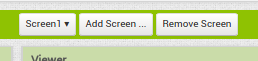
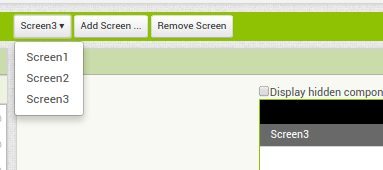
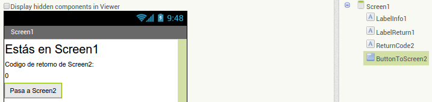
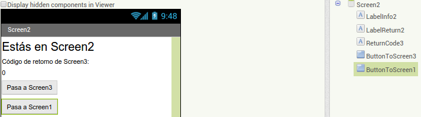
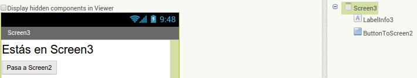
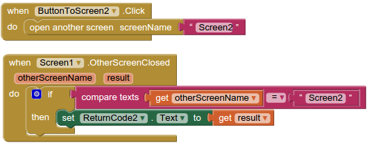
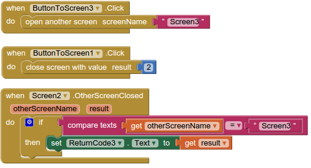
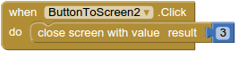

Pantallas, pantallas y más pantallas
Objetivos
- Aprender a usar múltiples pantallas en nuestras aplicaciones.
Crearemos un juego con varias pantallas en cada una de las cuales hay un botón que nos permite pasar a otra pantalla y luego volveremos para atrás por las mismas pantallas hasta llegar a la primera.
NOTA: AppInventor hace sencillo añadir más pantallas a una app, pero debes ser prudente para no añadir demasiadas. La forma en que trabaja AppInventor hace muy costoso tener múltiples pantallas, en términos de recursos computacionales. Esto es, nuestra app necesitará mucha memoria y mucho procesador para ejecutarse. De esta forma es fácil exceder las limitaciones de AppInventor. Como recomendación, no deberías tener más de 10 pantallas en una única app.
Actividad
Entra en AppInventor y crea un nuevo proyecto llamado "pantallas".
Para añadir nuevas pantallas debes hacerlo desde el submenú que ofrece la opción "Add Screen..."

Añade 2 pantallas extra, puedes nombrarlas "Screen2" y "Screen3" para no confundirnos (A "Screen1" nunca podremos cambiarle el nombre). Si te fijas en el submenú ahora tenemos la opción de cambiar entre las diferentes pantallas para configurar cada una de manera independiente:

Introduce en "Screen1": tres etiquetas y un botón. Renómbralos como "LabelInfo1", "LabelReturn1", "ReturnCode2" y "ButtonToScreen2"
Y que quede así "Screen1":

Introduce los componentes necesarios En "Screen2" y renómbralos usando la misma nomenclatura que hemos usado para "Screen1", de manera que quede así:

"Screen3" puede ser más sencilla:

Ahora vamos a programar, pasamos a la sección "Blocks" y seleccionamos "Screen1" para crear los programas y eventos correspondientes a esta pantalla:

Seleccionamos "Screen2" para crear sus programas correspondientes:

Y seleccionamos "Screen3" para programar lo correspondiente:

Si probamos nuestra aplicación podemos pasar hasta la pantalla 3 ("Screen3") y al volver hacia atrás iremos obteniendo y mostrando los valores de retorno. ¿Funciona?
Mejorando nuestros programas
Habrás observado que el programa va muy lento. Esto es porque al AppInventor no le sienta nada bien tener que usar pantallas. Conviene tener pocas pantallas en nuestras aplicaciones para que funcionen de una forma más eficiente.
De hecho más que múltiples pantallas podemos usar otra estrategia mejor para que nuestras aplicaciones puedan organizar la información mostrada y la interfaz de usuario.
Recuerda que podíamos colocar bien los objetos haciendo uso de los componentes "Arrangement" (Horizontal, Vertical, Table) de la categoría "Layout", ¿Se te ocurre cómo podemos utilizar esos componentes para ocultar o mostrar los objetos que queramos? La respuesta tiene que ver con la capa de invisibilidad de Harry Potter.
Ampliación
Vuelve a crear la aplicación anterior en la que pasabamos por tres pantallas, pero esta vez usa sólo la pantalla "Screen1" y dentro de ella utiliza tres "VerticalArrangement" (1, 2 y 3). Cada uno de éstos contendrá los mismos objetos que habíamos puesto en cada una de las pantallas "Screen1", "Screen2" y "Screen3" respectivamente.
Al iniciarse el programa sólo se mostrará el "VerticalArrangement1" y los otros dos estarán ocultos. Cuando hagamos click en los diferentes botones para pasar a otra <<pantalla>>, debes ocultar el "VerticalArrangement" actual y mostrar el correspondiente. Para que parezca que pasas un valor de retorno, antes de ocultar el "VerticalArrangement" actual debes modificar la etiqueta correspondiente poniendo el texto adecuado.
¡Inténtalo! Verás como la aplicación funciona mejor.
Y de ahora en adelante crearás aplicaciones con mejores interfaces y más organizadas ;-)
Obra publicada con Licencia Creative Commons Reconocimiento No comercial Compartir igual 3.0

Programando en AppInventor por Francisco Nevado Montero se distribuye bajo una Licencia Creative Commons Atribución-NoComercial-CompartirIgual 4.0 Internacional.